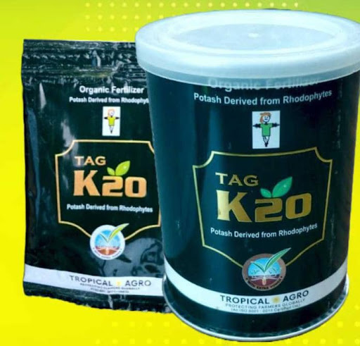

TAG K20 ORGANIC FERTILIZER
Potash Derived from Rhodophytes (Marine Red Algae) — Enhances flowering, fruit quality, and abiotic stress resistance.
Guaranteed Analysis & Specifications
Organic Potash (K2O)
20% Min.
Sulphur (S)
1.5% Min.
Source Material
Rhodophytes
Formulation
Soluble Powder
Foliar Dosage
48g / Acre
Drip Dosage
96g / Acre
Active Bio-Components & Functional Roles
| Active Component / Parameter | Description & Functional Benefit |
|---|---|
| Bio-available Potash (K2O) | Derived from natural red marine algae to boost flowering, fruit sizing, weight, and luster. |
| Elemental Sulphur (S) | Supports enzyme synthesis, chlorophyll formation, and protein development in crops. |
| Marine Bio-Active Molecules | Enhances natural plant hormonal activity and improves taste, color, and shelf life. |
| Abiotic Stress Shield | Helps crops withstand drought, thermal stress, and adverse environmental conditions. |
| Application Window | Recommended during flowering initiation and fruit development/maturity stages. |